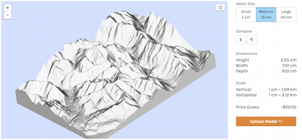

Topophile gives you the tools to explore and model terrain. Then Topophile teams up with 3D printing experts
Shapeways.com to turn your designs into physical forms.
Use Topophile to design your model and upload it to Shapeways. Order a print of your model from Shapeways and they’ll
ship it to you.
See Places in 3D!
| Mountains! | Lakes! | Cities! | More! |
|---|---|---|---|
Here's how you build your own model
-
1.Select the terrain you like and build a model -
2.Pick a size for your model, and upload it  -
3.Order a print of your model from Shapeways -
4.Hold your favorite place in your hand!